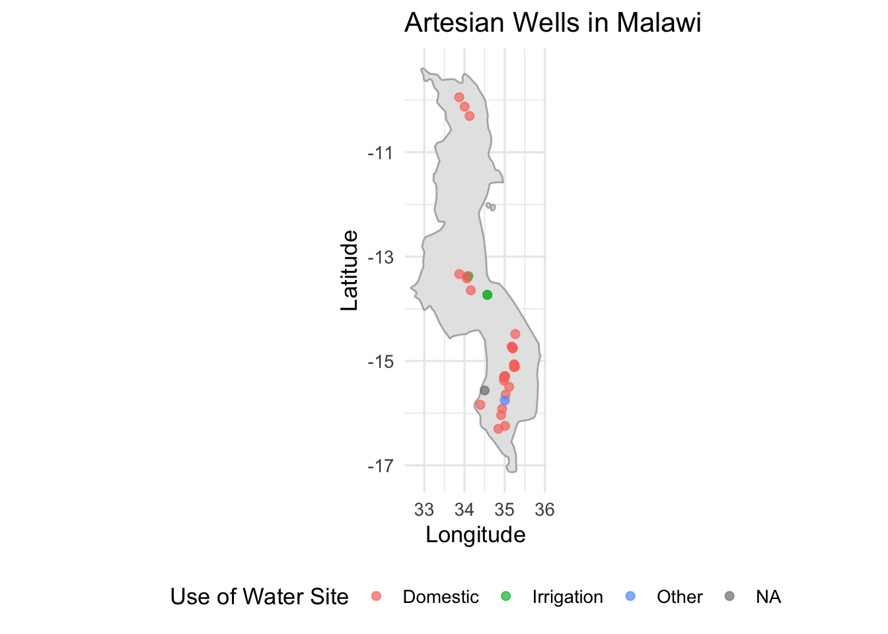

Description
This dataset provides detailed information on artesian well sites located in Zomba, Blantyre, Mangochi, Thyolo, Lilongwe, Dowa, Balaka, Mwanza, Neno and Chiradzulo, collected in April 2024. Each record represents a unique well site and includes attributes related to location (latitude and longitude), water source characteristics, infrastructure details, site usage, environmental context, and management structures.
Key variables
- Geolocation: Coordinates to map and analyze spatial distribution.
- Water source information: Whether the well is artesian, presence of structures, ability to test flow, and the time (in seconds) to fill a 20-liter container.
- Usage patterns: Main and additional uses of the site (e.g., domestic, irrigation, fish farming).
- Nearby water abstractions: Proximity and attributes of neighboring abstraction points.
- Environmental data: Seasonal availability and nearby river presence.
This dataset is complemented by images captured at each site, accessible via permanent URLs, which provide photographic evidence of physical and infrastructural conditions.
Potential Use Cases
Water Resource Planning and Management Government bodies and NGOs can use this dataset to assess water point availability, accessibility, and infrastructure needs.
- Hydrological and Environmental Studies Researchers and environmental scientists can analyze recharge patterns, abstraction pressures, and seasonal availability for groundwater sustainability assessments.
- Infrastructure Development and Maintenance Engineers and local authorities can use structure type and condition data to prioritize maintenance and investments in water infrastructure.
- Community Health and Livelihood Planning The dataset helps evaluate the adequacy of water sources for domestic and agricultural use, which is critical for public health and economic planning.
- Geospatial and GIS Mapping Projects The detailed coordinates and associated metadata support mapping efforts to visualize and analyze spatial patterns in water accessibility and site clustering.
- Monitoring and Evaluation (M&E) Organizations implementing rural water programs can track improvements, assess usage efficiency, and monitor infrastructure over time.
Installation
You can install the development version of artesianwells from GitHub with:
# install.packages("devtools")
devtools::install_github("openwashdata/artesianwells")
## Run the following code in console if you don't have the packages
## install.packages(c("dplyr", "knitr", "readr", "stringr", "gt", "kableExtra"))
library(dplyr)
library(knitr)
library(readr)
library(stringr)
library(gt)
library(kableExtra)Alternatively, you can download the individual datasets as a CSV or XLSX file from the table below.
- Click Download CSV. A window opens that displays the CSV in your browser.
- Right-click anywhere inside the window and select “Save Page As…”.
- Save the file in a folder of your choice.
| dataset | CSV | XLSX |
|---|---|---|
| artesianwells | Download CSV | Download XLSX |
Data
The package provides access to detailed information on artesian well sites
artesianwells
The dataset artesianwells contains 44 observations and 29 variables
artesianwells |>
head(3) |>
gt::gt() |>
gt::as_raw_html()| date_submitted | latitude | longitude | artesian_well | district | traditional_authority | well_images | has_structure | well_structure_type | well_structure_type_other | can_test_flow | seconds_to_fill_20L | use_of_site | other_site_use | seasonal_unavail | area_photos | abstraction_nearby | abstraction_count | abs1_name | abs1_latitude | abs1_longitude | abs1_method | abs1_region | recharge_known | recharge_other | river_nearby | has_operator | mgmt_type | mgmt_type_other |
|---|---|---|---|---|---|---|---|---|---|---|---|---|---|---|---|---|---|---|---|---|---|---|---|---|---|---|---|---|
For an overview of the variable names, see the following table.
| variable_name | variable_type | description |
|---|---|---|
| date_submitted | character | Date when the survey or data entry was submitted |
| latitude | numeric | Latitude coordinate of the surveyed site |
| longitude | numeric | Longitude coordinate of the surveyed site |
| artesian_well | character | Indicates whether the location of the artesian well |
| district | character | Administrative district where the site is located |
| traditional_authority | character | Traditional authority under which the site falls |
| well_images | character | Links or filenames of images showing the well |
| has_structure | character | Indicates if the well has a surrounding structure |
| well_structure_type | character | Type of structure present around the well |
| well_structure_type_other | character | Description of structure if Other is selected |
| can_test_flow | character | Indicates if a flow test can be conducted at the site |
| seconds_to_fill_20L | numeric | Time in seconds required to fill a 20 liter container |
| use_of_site | character | Primary community usage of the water source |
| other_site_use | character | Additional uses of the site (if any) |
| seasonal_unavail | character | Indicates if the site becomes unavailable during certain seasons |
| area_photos | character | Links or filenames of photos showing the broader site area |
| abstraction_nearby | character | Indicates if there are other water abstractions near the site |
| abstraction_count | numeric | Number of nearby water abstractions |
| abs1_name | character | Name or label of the nearest water abstraction |
| abs1_latitude | numeric | Latitude of the nearest abstraction |
| abs1_longitude | numeric | Longitude of the nearest abstraction |
| abs1_method | character | Method used at the nearest abstraction |
| abs1_region | character | Region or area where the nearest abstraction is located |
| recharge_known | character | Indicates if groundwater recharge source is known |
| recharge_other | character | Description of recharge source if Other is selected |
| river_nearby | character | Indicates if a river is near the site |
| has_operator | character | Indicates if the water point has a designated operator |
| mgmt_type | character | Type of management in place for the water source |
| mgmt_type_other | logical | Type of management in place for the water source if Other is selected |
Example
library(artesianwells)
library(dplyr)
library(ggplot2)
library(maps)
# Filter usable water point locations
water_map_data <- artesianwells %>%
filter(!is.na(latitude) & !is.na(longitude)) # Ensure geo-points are valid
# Get Malawi map outline
malawi_map <- map_data("world", region = "Malawi")
# Plot the water point locations
ggplot() +
geom_polygon(data = malawi_map, aes(x = long, y = lat, group = group),
fill = "gray90", color = "gray70") +
geom_point(data = water_map_data,
aes(x = longitude, y = latitude, color = use_of_site),
size = 2, alpha = 0.7) +
coord_fixed(1.3) +
labs(
title = "Artesian Wells in Malawi",
x = "Longitude", y = "Latitude", color = "Use of Water Site"
) +
theme_minimal(base_size = 13) +
theme(legend.position = "bottom")
License
Data are available as CC-BY.
Citation
Please cite this package using:
citation("artesianwells")
#> Um Paket 'artesianwells' in Publikationen zu zitieren, nutzen Sie
#> bitte:
#>
#> Mhango E (2025). "artesianwells: Artesian Well Site Assessment Data."
#> doi:10.5281/zenodo.15824828
#> <https://doi.org/10.5281/zenodo.15824828>,
#> <https://github.com/openwashdata/artesianwells>.
#>
#> Ein BibTeX-Eintrag für LaTeX-Benutzer ist
#>
#> @Misc{,
#> title = {artesianwells: Artesian Well Site Assessment Data},
#> author = {Emmanuel Mhango},
#> year = {2025},
#> url = {https://github.com/openwashdata/artesianwells},
#> abstract = {A dataset capturing geospatial, structural, usage, and management characteristics of artesian well sites.},
#> version = {0.1.0},
#> type = {dataset},
#> doi = {10.5281/zenodo.15824828},
#> }